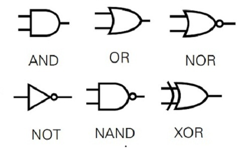
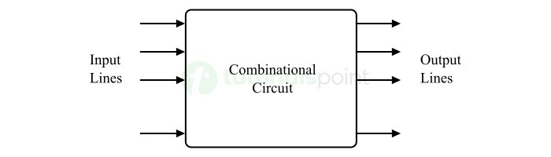
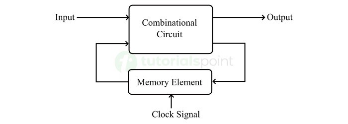

Logic gates are the fundamental building blocks of digital circuits. They implement boolean functions, taking one or more binary inputs and producing a single binary output according to specific logical rules.

Basic Logic Gates
The most common logic gates include:
Gate
Symbol
Function
Description
AND
&
Y = A·B
Output is 1 only if all inputs are 1
OR
≥1
Y = A+B
Output is 1 if at least one input is 1
NOT
1
Y = Ā
Inverts the input (1→0, 0→1)
NAND
&
Y = (A·B)̄
AND followed by NOT
NOR
≥1
Y = (A+B)̄
OR followed by NOT
XOR
=1
Y = A⊕B
Output is 1 if inputs are different
XNOR
=1
Y = (A⊕B)̄
Output is 1 if inputs are the same
Universal Gates
NAND and NOR gates are called universal gates because they can be used to implement any other logic function. This makes them particularly important in digital circuit design. For example, an AND gate can be created using NAND gates as follows:
AND(A,B) = NAND(NAND(A,B), NAND(A,B))
// Similarly, with NOR gates:
AND(A,B) = NOR(NOR(A,A), NOR(B,B))
The ability to create any logic function using just one type of gate is vital for simplified manufacturing and design consistency.
Combinational Circuits
Combinational circuits are digital circuits whose outputs depend only on the current values of the inputs. They have no memory or feedback loops, so they don't depend on previous states.

Key Characteristics
Output depends only on current input values
No memory or feedback mechanisms
Can be represented using truth tables or boolean expressions
Output changes after a propagation delay when inputs change
Common Combinational Circuits
1. Multiplexer (MUX)
A multiplexer selects one of several input signals and forwards it to a single output line. Selection is controlled by separate "select" inputs.
A demultiplexer performs the opposite function of a multiplexer - it takes a single input and directs it to one of several outputs based on select lines.
3. Encoder and Decoder
An encoder converts multiple input lines into a coded binary output, while a decoder converts binary codes to multiple output lines.
4. Adders
Adders perform addition of binary numbers. A half-adder adds two single binary digits, while a full-adder adds three binary digits (including a carry from a previous addition).
Half-Adder:
Inputs: A, B
Outputs: Sum (S), Carry (C)
A B | S C
----+----
0 0 | 0 0
0 1 | 1 0
1 0 | 1 0
1 1 | 0 1
Full adders can be combined to add multi-bit numbers, forming the arithmetic core of a computer's processor.
Sequential Circuits
Unlike combinational circuits, sequential circuits have memory elements that store state information. Their outputs depend not only on current inputs but also on the current state (which reflects past inputs).

Flip-Flops: The Memory Elements
Flip-flops are bistable multivibrators that can store one bit of information. They form the basis of registers, counters, and memory in digital systems.
Types of Flip-Flops:
Type
Description
Key Characteristic
SR (Set-Reset)
Basic flip-flop with Set and Reset inputs
Has an invalid state when S=R=1
JK
Improved version of SR flip-flop
No invalid states; toggles output when J=K=1
D (Data)
Stores the value of the D input
Simplest to use; output follows input when clocked
T (Toggle)
Toggles state when T=1, holds state when T=0
Commonly used in counters
Common Sequential Circuits
1. Registers
Registers are groups of flip-flops used to store multi-bit data. A 4-bit register consists of four flip-flops that can store a 4-bit binary number. Registers are essential for temporary data storage in processors.
2. Counters
Counters are sequential circuits that proceed through a predetermined sequence of states when clocked. They are used for counting events, creating timing signals, and generating sequences.
Shift registers move data bits in a specified direction (left or right) with each clock pulse. They are used for serial-to-parallel and parallel-to-serial conversion, temporary storage, and in certain arithmetic operations.
Clock Signals
Sequential circuits require a clock signal to coordinate when state changes occur. The clock is a regular, oscillating signal that triggers flip-flops to capture input data at specific times, ensuring synchronized operation across the circuit.